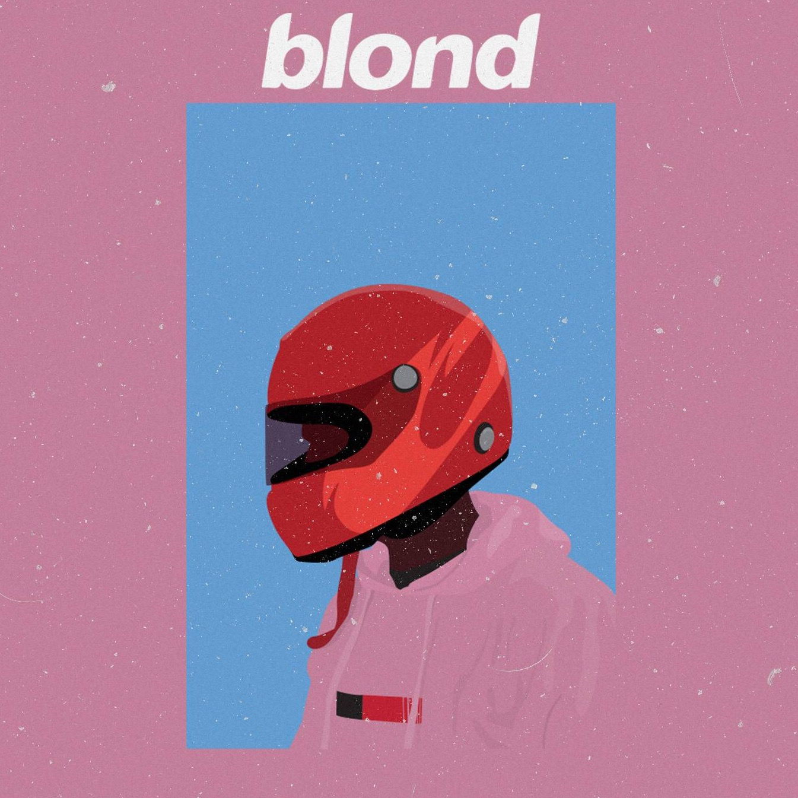
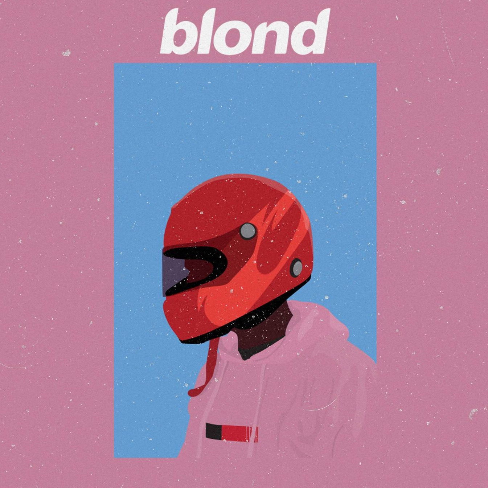
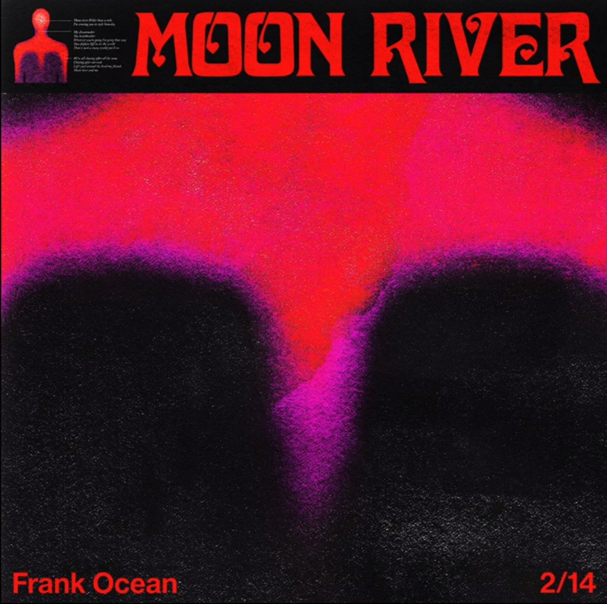
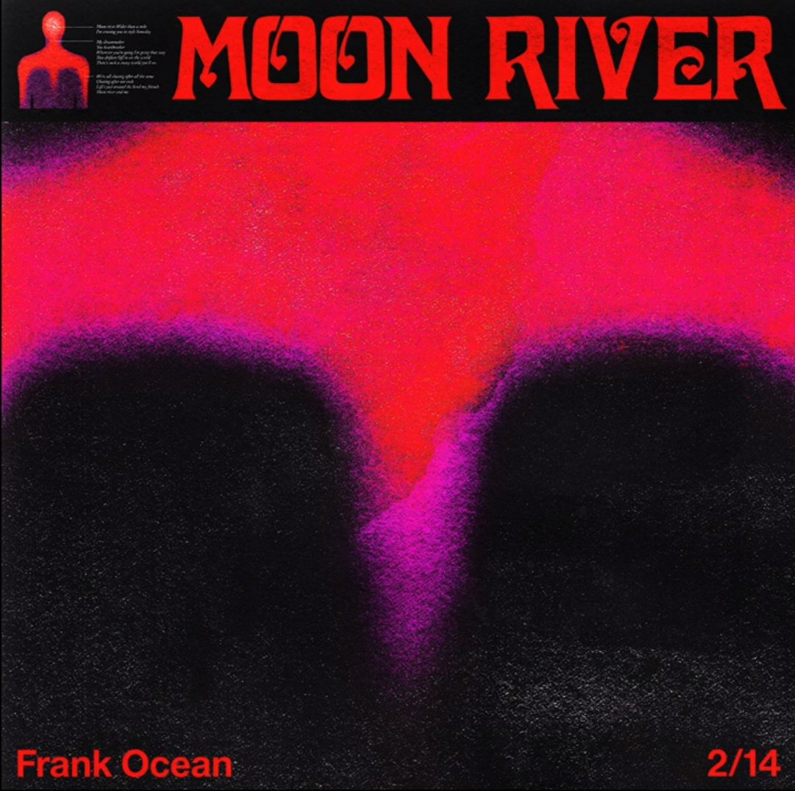

 

Frank Ocean
Famed musician Frank Ocean was born Christopher Lonny Breaux on October 28, 1987, in Long Beach, California. When he was a child, Breaux’s family moved to New Orleans, where he spent the majority of his youth. He was exposed to the jazz scene there, and also listened to his mother’s R&B CDs.
While in high school, Ocean began recording music and worked various odd jobs to pay for the studio time. After graduating from high school in 2005, he enrolled at the University of New Orleans. However, in August of that year, Hurricane Katrina hit and wreaked havoc on the region. Amidst the chaos, the facility where Ocean was recording at the time was badly flooded and looted, prompting him to set aside his academic ambitions and take some time to pursue his musical goals.
Ocean moved to Los Angeles to continue his recording projects, intending to stay only a short while. However, as he continued to make meaningful contacts within the music industry, he decided to extend his stay. To make money during this time, Ocean took a job processing insurance claims. Eventually, he got a songwriting deal and began collaborating with producers. He contributed to the writing of the Justin Bieber track “Bigger” in 2008, and the following year he co-wrote the track “I Miss You” with Beyoncé Knowles for her album 4.
Awards won by Ocean
- 2013 GRAMMY AWARDS - Best Urban Contemporary Album (channel ORANGE)
- 2013 GRAMMY AWARDS - Best Rap/Sung Collaboration (No Church in the Wild with Kanye West & Jay-Z)
- 2013 BRIT AWARDS - International Male Arist
- 2013 GLAAD MEDIA AWARDS - Outstanding Music Artist
- 2016 ATTITUDE MAGAZINE AWARDS - Artist of the Year
That same year, Ocean began to work with the Los Angeles-based hip-hop collective Odd Future, most notably with Tyler, the Creator, who encouraged Ocean in his songwriting. In February 2011, Ocean released a mixtape titled nostalgia, ULTRA. He released the recordings as a free download on his Tumblr site, without Def Jam’s knowledge, announcing via Twitter that he had done so because the label had not been supportive of his efforts after signing him. Ocean’s self-released recording featured a mixture of both originally composed music and heavy samples of tracks from the likes of Coldplay, the Eagles and MGMT.
Ocean’s second album, channel ORANGE, was released for download on iTunes on July 10, 2012. met with almost universal critical acclaim, topping music charts around the world and earning Ocean comparisons to such R&B greats as Prince and Stevie Wonder. Most notably, the album went on to win the 2013 Grammy Award for best urban contemporary album.
On back-to-back days in August 2016, Ocean released the visual album Endless, as well as his third album (second studio album), Blonde, which shot to the top of the charts both in the U.S. and the U.K.